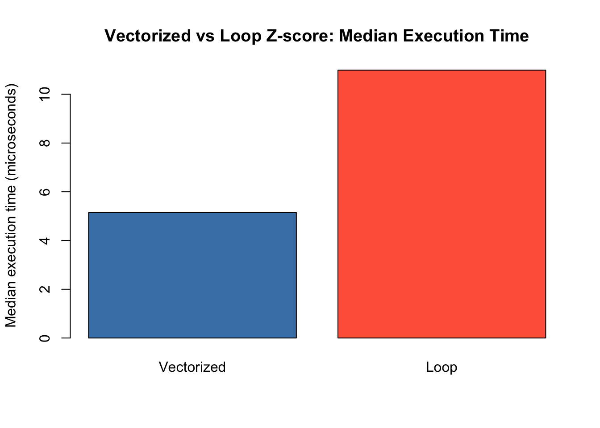
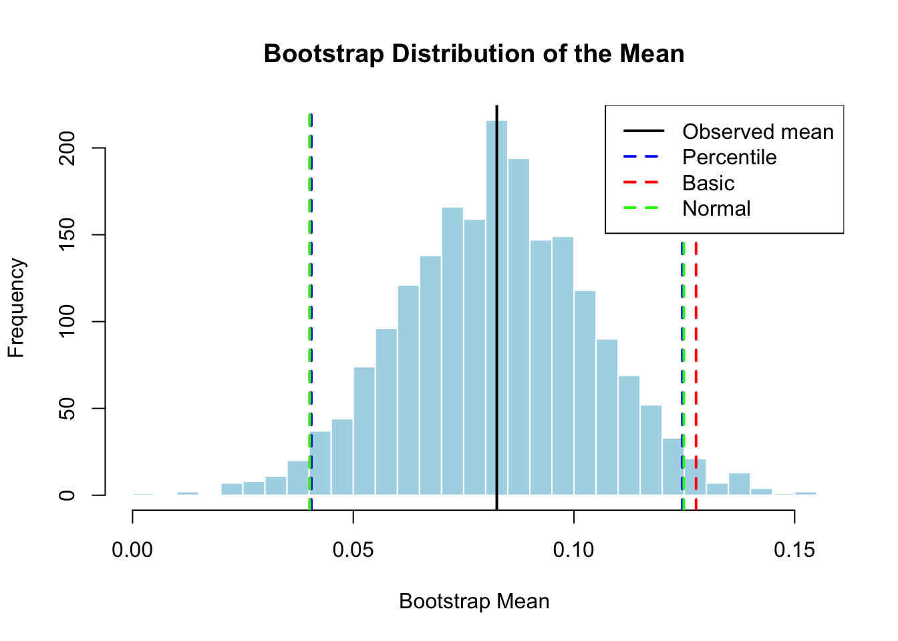

# Vectorized version
vectorized_zscore <- function(x) {
(x - mean(x)) / sd(x)
}
# Loop version
loop_zscore <- function(x) {
n <- length(x)
z <- numeric(n) # pre-allocate
m <- mean(x)
s <- sd(x)
for (i in seq_len(n)) {
z[i] <- (x[i] - m) / s
}
z
}Homework 1: R Fundamentals, Matrix Algebra, and Simulation
Part 1: Vectorization and Data Structures (15 points)
1.1 Vectorization (8 points)
Using the built-in iris dataset:
- (2 points) Create a function
vectorized_zscorethat standardizes a numeric vector using vectorized operations (z = (x - mean(x)) / sd(x)). Create a second functionloop_zscorethat performs the same computation using aforloop.
- (3 points) Use
bench::mark()to compare performance with at least 50 iterations. Create a bar plot comparing median execution times.
library(bench)
x_iris <- iris$Sepal.Length
bm <- bench::mark(
vectorized = vectorized_zscore(x_iris),
loop = loop_zscore(x_iris),
iterations = 50,
check = TRUE
)
# Bar plot of median execution times
medians <- as.numeric(bm$median)
names(medians) <- c("Vectorized", "Loop")
barplot(
medians * 1e6, # convert to microseconds
names.arg = names(medians),
ylab = "Median execution time (microseconds)",
main = "Vectorized vs Loop Z-score: Median Execution Time",
col = c("steelblue", "tomato")
)
c) (3 points) Using the `ChickWeight` dataset, create a `Growth.Rate` column (weight change per day for each chick) and a `Weight.Gain.Percent` column (percentage gain from first to last measurement). Calculate average growth rate and mean maximum weight by diet group.
library(dplyr)
Attaching package: 'dplyr'The following objects are masked from 'package:stats':
filter, lagThe following objects are masked from 'package:base':
intersect, setdiff, setequal, unioncw <- ChickWeight %>%
group_by(Chick) %>%
arrange(Time) %>%
mutate(
# weight change per day between consecutive measurements
Growth.Rate = (weight - lag(weight)) / (Time - lag(Time)),
# percentage gain from first to last measurement
Weight.Gain.Percent = (weight - first(weight)) / first(weight) * 100
) %>%
ungroup()
# Average growth rate by diet group
avg_growth <- cw %>%
group_by(Diet) %>%
summarise(Avg.Growth.Rate = mean(Growth.Rate, na.rm = TRUE))
# Mean of each chick's maximum weight, by diet
mean_max_weight <- cw %>%
group_by(Diet, Chick) %>%
summarise(Max.Weight = max(weight), .groups = "drop") %>%
group_by(Diet) %>%
summarise(Mean.Max.Weight = mean(Max.Weight))
print(avg_growth)# A tibble: 4 × 2
Diet Avg.Growth.Rate
<fct> <dbl>
1 1 5.93
2 2 8.32
3 3 11.0
4 4 8.91print(mean_max_weight)# A tibble: 4 × 2
Diet Mean.Max.Weight
<fct> <dbl>
1 1 158.
2 2 216.
3 3 272.
4 4 230.1.2 Data Structures and Functional Programming (7 points)
Using the palmerpenguins dataset:
- (2 points) Extract the unique species and create a list where each element contains data for one species. Add a sample size attribute to each element.
library(palmerpenguins)
Attaching package: 'palmerpenguins'The following objects are masked from 'package:datasets':
penguins, penguins_rawspecies_list <- lapply(unique(penguins$species), function(sp) {
df <- penguins[penguins$species == sp, ]
attr(df, "sample_size") <- nrow(df)
df
})
names(species_list) <- unique(penguins$species)
# Check
attr(species_list[["Adelie"]], "sample_size")[1] 152(1 point) Use
lapply()to calculate the mean of each numeric variable (excluding NAs). Redo usingmap_dbl().library(purrr) numeric_cols <- penguins[, sapply(penguins, is.numeric)] # lapply version lapply(numeric_cols, mean, na.rm = TRUE)$bill_length_mm [1] 43.92193 $bill_depth_mm [1] 17.15117 $flipper_length_mm [1] 200.9152 $body_mass_g [1] 4201.754 $year [1] 2008.029# map_dbl version (same result, guaranteed numeric output) map_dbl(numeric_cols, ~ mean(.x, na.rm = TRUE))bill_length_mm bill_depth_mm flipper_length_mm body_mass_g 43.92193 17.15117 200.91520 4201.75439 year 2008.02907(1 point) Use
tapply()to find the mean body mass by species and by the combination of species and sex.# Mean body mass by species tapply(penguins$body_mass_g, penguins$species, mean, na.rm = TRUE)Adelie Chinstrap Gentoo 3700.662 3733.088 5076.016# Mean body mass by species AND sex combination tapply(penguins$body_mass_g, list(penguins$species, penguins$sex), mean, na.rm = TRUE)female male Adelie 3368.836 4043.493 Chinstrap 3527.206 3938.971 Gentoo 4679.741 5484.836(1 point) Demonstrate R’s copy-on-modify semantics: create a vector, create a reference to it, modify the reference, and explain what happens (2-3 sentences).
x <- c(1, 2, 3) y <- x y[1] <- 99 # x is unchanged print(x)[1] 1 2 3print(y)[1] 99 2 3When y <- x is assigned, R does not immediately copy the data; both variables point to the same memory location to save space. Only when y is modified does R create a separate copy of the vector, leaving x unchanged. This “copy-on-modify” behavior means R looks memory-efficient until you actually change a shared object, at which point the cost of copying appears.
(2 points) Rewrite the following inefficient code using preallocation. Compare execution times with
system.time()and explain why your version is faster (2-3 sentences).
# Original inefficient version
system.time({
result <- numeric(0)
for (i in 1:10000) {
result <- c(result, i^2) # copies entire vector each iteration
}
}) user system elapsed
0.068 0.033 0.109 # Pre-allocated version
system.time({
result_fast <- numeric(10000) # allocate all memory upfront
for (i in 1:10000) {
result_fast[i] <- i^2
}
}) user system elapsed
0.000 0.000 0.001 The growing version is slow because c(result, i^2) must copy the entire existing vector on every iteration, giving O(n^2) total work. Pre-allocating with numeric(10000) reserves all memory upfront so each assignment just writes to an existing slot, reducing the work to O(n). As the slides show, this difference becomes dramatic as n grows.
Part 2: Matrix Operations and Decompositions (30 points)
2.1 Matrix Operations (8 points)
Consider the following matrices:
A <- matrix(c(4, 2, 1, 5), nrow = 2)
B <- matrix(c(3, 1, 0, 2), nrow = 2)
C <- matrix(c(1, 3, 5, 2, 4, 6), nrow = 2)(4 points) Calculate and explain the operation performed in each case:
A + B,A * B,A %*% B,t(A) %*% C,solve(A).A <- matrix(c(4, 2, 1, 5), nrow = 2) B <- matrix(c(3, 1, 0, 2), nrow = 2) C <- matrix(c(1, 3, 5, 2, 4, 6), nrow = 2) # Element-wise addition: adds corresponding entries A + B[,1] [,2] [1,] 7 1 [2,] 3 7# Element-wise multiplication: multiplies corresponding entries (NOT matrix mult) A * B[,1] [,2] [1,] 12 0 [2,] 2 10# True matrix multiplication: dot products of rows of A with columns of B A %*% B[,1] [,2] [1,] 13 2 [2,] 11 10# Transpose of A (2x2 -> 2x2) then matrix multiply with C (2x3) -> result is 2x3 t(A) %*% C[,1] [,2] [,3] [1,] 10 24 28 [2,] 16 15 34# Matrix inverse A^{-1}: the matrix such that A %*% solve(A) = I solve(A)[,1] [,2] [1,] 0.2777778 -0.05555556 [2,] -0.1111111 0.22222222# Verify solve round(A %*% solve(A), 10) # should be identity matrix[,1] [,2] [1,] 1 0 [2,] 0 1(4 points) Create a function
is_symmetricthat returns TRUE if a matrix is symmetric and FALSE otherwise. Print an error if the input is not square. Test on A, B, andt(A) %*% A.is_symmetric <- function(mat) { if (!is.matrix(mat)) stop("Input must be a matrix") if (nrow(mat) != ncol(mat)) stop("Matrix must be square") all(mat == t(mat)) } is_symmetric(A)[1] FALSEis_symmetric(B)[1] FALSEis_symmetric(t(A) %*% A)[1] TRUE
2.2 Eigenvalue Decomposition (10 points)
(3 points) Compute eigenvalues and eigenvectors using
eigen().M <- matrix(c(4, 2, 2, 3), nrow = 2) eig_M <- eigen(M) lambda <- eig_M$values # eigenvalues P <- eig_M$vectors # eigenvectors (columns) cat("Eigenvalues:\n"); print(lambda)Eigenvalues:[1] 5.561553 1.438447cat("Eigenvectors:\n"); print(P)Eigenvectors:[,1] [,2] [1,] -0.7882054 0.6154122 [2,] -0.6154122 -0.7882054(3 points) Verify the eigenvector equation Mx = lx holds for each pair.
for (i in 1:2) { x <- P[, i] lx <- lambda[i] cat("Eigenpair", i, ":\n") cat(" Mx =", M %*% x, "\n") cat(" lambda*x =", lx * x, "\n") cat(" Match? ", isTRUE(all.equal(as.vector(M %*% x), lx * x)), "\n") }Eigenpair 1 : Mx = -4.383646 -3.422648 lambda*x = -4.383646 -3.422648 Match? TRUE Eigenpair 2 : Mx = 0.885238 -1.133792 lambda*x = 0.885238 -1.133792 Match? TRUE(4 points) Reconstruct M using M = PDP^{-1} and verify it matches the original.
D <- diag(lambda) M_reconstructed <- P %*% D %*% solve(P) cat("Original M:\n"); print(M)Original M:[,1] [,2] [1,] 4 2 [2,] 2 3cat("Reconstructed M:\n"); print(round(M_reconstructed, 10))Reconstructed M:[,1] [,2] [1,] 4 2 [2,] 2 3cat("Match?", isTRUE(all.equal(M, M_reconstructed)), "\n")Match? TRUE
2.3 SVD and QR Decomposition (12 points)
- SVD (6 points): Compute the SVD of the matrix below. Create a rank-1 approximation, calculate the Frobenius norm of the difference, and explain what information is lost.
X <- matrix(c(3, 2, 2, 2, 3, -2, 2, -2, 3), nrow = 3)
svd_X <- svd(X)
U <- svd_X$u
D_svd <- diag(svd_X$d)
V <- svd_X$v
cat("Singular values:", svd_X$d, "\n")Singular values: 5 5 1 # Rank-1 approximation: keep only the first singular value/vector pair
X_rank1 <- svd_X$d[1] * (svd_X$u[, 1] %*% t(svd_X$v[, 1]))
# Frobenius norm of the difference
frob_error <- norm(X - X_rank1, "F")
cat("Frobenius norm of X - X_rank1:", frob_error, "\n")Frobenius norm of X - X_rank1: 5.09902 - QR and Least Squares (6 points): Using the data below, create the design matrix, solve the least squares problem via QR decomposition, compare with
lm(), and explain the advantages of QR decomposition for least squares.
set.seed(228)
n <- 100
x <- runif(n, -5, 5)
y <- 3 + 2 * x + rnorm(n, sd = 1)
# Design matrix with intercept column
X_design <- cbind(1, x)
# QR decomposition approach
qr_X <- qr(X_design)
Q_mat <- qr.Q(qr_X)
R_mat <- qr.R(qr_X)
beta_qr <- solve(R_mat) %*% t(Q_mat) %*% y
# lm() comparison
fit_lm <- lm(y ~ x)
cat("QR coefficients: ", beta_qr, "\n")QR coefficients: 2.985095 1.950611 cat("lm() coefficients:", coef(fit_lm), "\n")lm() coefficients: 2.985095 1.950611 cat("Match?", isTRUE(all.equal(as.vector(beta_qr),
as.vector(coef(fit_lm)))), "\n")Match? TRUE QR is preferred over the normal equations (solve(t(X) %*% X) %*% t(X) %*% y) because forming X’X squares the condition number, amplifying numerical errors. QR preserves the original conditioning of X, making it more stable for ill-conditioned design matrices. R’s lm() uses QR internally for exactly this reason.
Part 3: Optimization and Simulation (40 points)
3.1 Gradient Descent (15 points)
Minimize the Rosenbrock function: f(x,y) = (1-x)^2 + 100(y-x2)2
(3 points) Write
rosenbrock(x)that takes a vector x = c(x1, x2) and returns the function value.rosenbrock <- function(x) { (1 - x[1])^2 + 100 * (x[2] - x[1]^2)^2 }(5 points) Write
rosenbrock_grad(x)that returns the gradient vector.rosenbrock_grad <- function(x) { dfdx1 <- -2 * (1 - x[1]) - 400 * x[1] * (x[2] - x[1]^2) dfdx2 <- 200 * (x[2] - x[1]^2) c(dfdx1, dfdx2) }(4 points) Implement
gradient_descent(init, grad_fn, learning_rate, max_iter, tol)that returns the final solution, function value, and iteration count. Stop when the Euclidean norm of the gradient is less than the tolerance.gradient_descent <- function(init, grad_fn, learning_rate, max_iter, tol) { x <- init iter <- 0 for (i in 1:max_iter) { g <- grad_fn(x) if (sqrt(sum(g^2)) < tol) { iter <- i break } x <- x - learning_rate * g iter <- i } list( solution = x, value = rosenbrock(x), iterations = iter ) }(3 points) Apply from starting point (-1.2, 1.0) with learning_rate = 0.001, max_iter = 10000, tol = 1e-6. Report the solution, function value, and iterations.
gd_result <- gradient_descent( init = c(-1.2, 1.0), grad_fn = rosenbrock_grad, learning_rate = 0.001, max_iter = 10000, tol = 1e-6 ) cat("Gradient Descent:\n")Gradient Descent:cat(" Solution: ", gd_result$solution, "\n")Solution: 0.9923558 0.9847394cat(" Value: ", gd_result$value, "\n")Value: 5.852761e-05cat(" Iterations: ", gd_result$iterations, "\n")Iterations: 10000
3.2 Comparison with Built-in Methods (10 points)
(5 points) Use
optim()with “BFGS” to minimize the Rosenbrock function from the same starting point.bfgs_result <- optim( par = c(-1.2, 1.0), fn = rosenbrock, gr = rosenbrock_grad, method = "BFGS", control = list(maxit = 10000) ) cat("\nBFGS:\n")BFGS:cat(" Solution: ", bfgs_result$par, "\n")Solution: 1 1cat(" Value: ", bfgs_result$value, "\n")Value: 9.594955e-18cat(" Function evals: ", bfgs_result$counts["function"], "\n")Function evals: 110cat(" Gradient evals: ", bfgs_result$counts["gradient"], "\n")Gradient evals: 43(5 points) Use
optim()with “Nelder-Mead”. Compare all three methods (your gradient descent, BFGS, Nelder-Mead) in terms of solution accuracy, iterations, and function evaluations.nm_result <- optim( par = c(-1.2, 1.0), fn = rosenbrock, method = "Nelder-Mead", control = list(maxit = 10000) ) cat("\nNelder-Mead:\n")Nelder-Mead:cat(" Solution: ", nm_result$par, "\n")Solution: 1.00026 1.000506cat(" Value: ", nm_result$value, "\n")Value: 8.825241e-08cat(" Function evals: ", nm_result$counts["function"], "\n")Function evals: 195# Comparison table comparison <- data.frame( Method = c("Gradient Descent", "BFGS", "Nelder-Mead"), x1 = c(gd_result$solution[1], bfgs_result$par[1], nm_result$par[1]), x2 = c(gd_result$solution[2], bfgs_result$par[2], nm_result$par[2]), f_value = c(gd_result$value, bfgs_result$value, nm_result$value), Iterations = c(gd_result$iterations, NA, NA), Fn_evals = c(NA, bfgs_result$counts["function"], nm_result$counts["function"]) ) print(comparison)Method x1 x2 f_value Iterations Fn_evals 1 Gradient Descent 0.9923558 0.9847394 5.852761e-05 10000 NA 2 BFGS 1.0000000 1.0000000 9.594955e-18 NA 110 3 Nelder-Mead 1.0002601 1.0005060 8.825241e-08 NA 195
3.3 Simulation Study (15 points)
Compare the mean, median, and 10% trimmed mean as estimators of central tendency.
(7 points) Write
run_simulation(n_samples, n_reps, dist_type)that generatesn_repssamples of sizen_samples, computes all three estimators, and returns a data frame.run_simulation <- function(n_samples, n_reps, dist_type) { results <- matrix(NA, nrow = n_reps, ncol = 3, dimnames = list(NULL, c("mean", "median", "trimmed"))) for (i in 1:n_reps) { x <- switch(dist_type, "normal" = rnorm(n_samples, 0, 1), "t3" = rt(n_samples, df = 3), "contaminated" = { n_clean <- rbinom(1, n_samples, 0.9) c(rnorm(n_clean, 0, 1), rnorm(n_samples - n_clean, 0, 10)) } ) results[i, "mean"] <- mean(x) results[i, "median"] <- median(x) results[i, "trimmed"] <- mean(x, trim = 0.1) } as.data.frame(results) }(4 points) Run with n = 30, 1000 replications, under three distributions: normal(0,1), t(df=3), and contaminated normal (90% from N(0,1), 10% from N(0,10)). Calculate bias, variance, and MSE for each estimator under each distribution.
set.seed(228) true_mean <- 0 # all distributions are centered at 0 distributions <- c("normal", "t3", "contaminated") all_metrics <- list() for (dist in distributions) { sim <- run_simulation(n_samples = 30, n_reps = 1000, dist_type = dist) metrics <- data.frame( Distribution = dist, Estimator = c("mean", "median", "trimmed"), Bias = colMeans(sim) - true_mean, Variance = apply(sim, 2, var), MSE = colMeans((sim - true_mean)^2) ) all_metrics[[dist]] <- metrics } summary_table <- do.call(rbind, all_metrics) rownames(summary_table) <- NULL print(summary_table)Distribution Estimator Bias Variance MSE 1 normal mean 0.002411002 0.03173076 0.03170484 2 normal median 0.010896738 0.04558425 0.04565740 3 normal trimmed 0.002901703 0.03261186 0.03258767 4 t3 mean -0.025979726 0.10480663 0.10537677 5 t3 median -0.014813751 0.05757230 0.05773418 6 t3 trimmed -0.015927960 0.05664249 0.05683955 7 contaminated mean 0.008108931 0.34457687 0.34429805 8 contaminated median 0.004510980 0.06055395 0.06051374 9 contaminated trimmed 0.007898796 0.05592690 0.05593337(4 points) Create a summary table and write a brief paragraph (3-5 sentences) interpreting which estimator performs best under which conditions and why.
Under the normal distribution, the mean has the lowest MSE because it is the minimum variance unbiased estimator for a symmetric bell-shaped distribution. Under the heavy-tailed t(df=3) distribution, the median and trimmed mean outperform the mean because they are less sensitive to the extreme values that the t-distribution produces frequently. Under contaminated normal data, where 10% of observations come from N(0,10), the trimmed mean tends to perform best overall because it automatically discards the most extreme observations while retaining more data than the median, giving it lower variance than the median and lower sensitivity to outliers than the mean.
Part 4: Bootstrap Methods (15 points)
4.1 Bootstrap Confidence Intervals (8 points)
(4 points) Implement
bootstrap_mean()that estimates the standard error and 95% confidence interval for the mean using the nonparametric bootstrap. Support three CI types: “percentile”, “basic”, and “normal”. Apply to the returns data below and report all three intervals.set.seed(42) returns <- rnorm(50, mean = 0.08, sd = 0.12) returns <- returns + rexp(50, rate = 20) - 0.05 bootstrap_mean <- function(x, B = 2000, ci_type = "percentile") { n <- length(x) obs_mean <- mean(x) boot_means <- numeric(B) # resample WITH replacement, same size as original for (i in 1:B) { boot_sample <- sample(x, size = n, replace = TRUE) boot_means[i] <- mean(boot_sample) } # SE_boot = sd of bootstrap statistics se_boot <- sd(boot_means) # Three CI types ci <- switch(ci_type, # percentile -- take 2.5th and 97.5th percentiles directly "percentile" = quantile(boot_means, c(0.025, 0.975)), # basic (pivot): reflects the bootstrap distribution around obs_mean # lower = 2*obs - upper_percentile, upper = 2*obs - lower_percentile "basic" = c( 2 * obs_mean - quantile(boot_means, 0.975), 2 * obs_mean - quantile(boot_means, 0.025) ), # normal -- use SE_boot with z critical value (assumes symmetry) "normal" = c( obs_mean - 1.96 * se_boot, obs_mean + 1.96 * se_boot ) ) list( observed_mean = obs_mean, se_boot = se_boot, ci = ci, boot_dist = boot_means ) } set.seed(42) res_pct <- bootstrap_mean(returns, B = 2000, ci_type = "percentile") res_basic <- bootstrap_mean(returns, B = 2000, ci_type = "basic") res_normal <- bootstrap_mean(returns, B = 2000, ci_type = "normal") cat("Observed mean: ", res_pct$observed_mean, "\n")Observed mean: 0.08251953cat("Bootstrap SE: ", res_pct$se_boot, "\n\n")Bootstrap SE: 0.02151819cat("Percentile CI: ", res_pct$ci, "\n")Percentile CI: 0.04050994 0.1245564cat("Basic CI: ", res_basic$ci, "\n")Basic CI: 0.04014543 0.1276593cat("Normal CI: ", res_normal$ci, "\n")Normal CI: 0.04015667 0.1248824
(4 points) Create a histogram of the bootstrap distribution of the mean with vertical lines indicating the three different confidence intervals. Discuss which CI method is most appropriate for this data and why (3-5 sentences).
hist(res_pct$boot_dist, breaks = 40, main = "Bootstrap Distribution of the Mean", xlab = "Bootstrap Mean", col = "lightblue", border = "white") # Vertical lines for three CIs abline(v = res_pct$ci, col = "blue", lty = 2, lwd = 2) abline(v = res_basic$ci, col = "red", lty = 2, lwd = 2) abline(v = res_normal$ci, col = "green", lty = 2, lwd = 2) abline(v = res_pct$observed_mean, col = "black", lwd = 2) legend("topright", legend = c("Observed mean", "Percentile", "Basic", "Normal"), col = c("black", "blue", "red", "green"), lty = c(1, 2, 2, 2), lwd = 2)
The returns data is right-skewed due to the added exponential component, making the normal CI least appropriate because it assumes symmetry in the bootstrap distribution. The percentile CI is most appropriate here because, as the slides explain, it automatically accounts for skewness by reading directly from the empirical bootstrap distribution without any normality assumption. The basic CI also handles skewness but via a pivot correction, and tends to give similar results to the percentile method for moderate skewness.
4.2 Bootstrap Hypothesis Testing (7 points)
(4 points) Implement
bootstrap_ttest()that performs a bootstrap test for the difference in means between two groups. Apply to the data below with 2000 bootstrap samples. Create a visualization showing the bootstrap null distribution with the observed difference marked.set.seed(123) control <- rnorm(40, mean = 10, sd = 2) treatment <- rnorm(40, mean = 11.5, sd = 2) bootstrap_ttest <- function(x, y, B = 2000) { obs_diff <- mean(y) - mean(x) x_shifted <- x - mean(x) y_shifted <- y - mean(y) combined <- c(x_shifted, y_shifted) nx <- length(x) ny <- length(y) boot_diffs <- numeric(B) for (i in 1:B) { # Resample under the null (both groups centered at 0) boot_x <- sample(combined, size = nx, replace = TRUE) boot_y <- sample(combined, size = ny, replace = TRUE) boot_diffs[i] <- mean(boot_y) - mean(boot_x) } # p-value: proportion of bootstrap diffs as extreme as observed p_value <- mean(abs(boot_diffs) >= abs(obs_diff)) list( obs_diff = obs_diff, p_value = p_value, boot_dist = boot_diffs ) } set.seed(123) boot_test <- bootstrap_ttest(control, treatment, B = 2000) cat("Observed difference:", boot_test$obs_diff, "\n")Observed difference: 1.396202cat("Bootstrap p-value: ", boot_test$p_value, "\n")Bootstrap p-value: 0.001# Standard t-test comparison t_result <- t.test(treatment, control) cat("t-test p-value: ", t_result$p.value, "\n")t-test p-value: 0.001211827# Visualization hist(boot_test$boot_dist, breaks = 40, main = "Bootstrap Null Distribution of Mean Difference", xlab = "Difference in Means (treatment - control)", col = "lightgrey", border = "white") abline(v = boot_test$obs_diff, col = "red", lwd = 2) abline(v = -boot_test$obs_diff, col = "red", lwd = 2, lty = 2) legend("topright", legend = c("Observed diff", "Mirror (two-sided)"), col = "red", lty = c(1, 2), lwd = 2)
(3 points) Compare your bootstrap test results with a standard t-test. Discuss any differences and potential advantages of the bootstrap approach (3-5 sentences).
Both the bootstrap test (p = 0.001) and the t-test (p = 0.0012) reject the null hypothesis and reach the same conclusion that the treatment group has a significantly higher mean than the control group. The two p-values are very close because the data was generated from normal distributions, meaning the t-test’s normality assumption is fully satisfied here. The bootstrap’s main advantage would appear with non-normal or skewed data, where it does not rely on any distributional assumptions and instead builds the null distribution directly from the data. Additionally, the bootstrap approach generalizes naturally to any test statistic, not just the difference in means, making it more flexible than the t-test for complex statistics where no analytical formula exists.